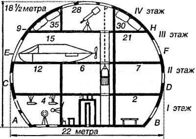
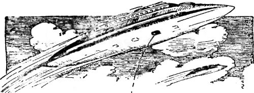
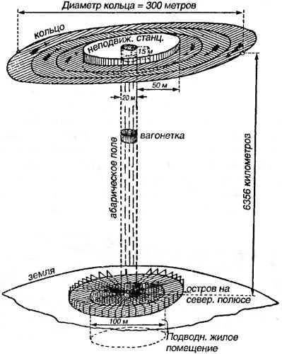

Экран тяготения
Разумеется, мысль изобретателей и романистов в начале XX века не ограничивалась перебором новых вариантов традиционных схем. Люди, размышлявшие о космических путешествиях и контактах с инопланетными цивилизациями, в своих мечтах намного опережали время, и технические проблемы, связанные с реализацией самых фантастических проектов, не пугали их. Ведь каждый день приносил новые открытия, мир менялся буквально на глазах, и казалось, так будет всегда.
Среди самых необычных проектов того времени особняком стоит так называемый «экран тяготения» (сегодня его бы назвали «антигравитационным двигателем»).
Как мы уже отмечали, автором принципа антигравитации является Александр Дюма, упомянувший в сочинении «Путешествие на Луну» некое вещество, отталкиваемое Землей.
В 1901 году к той же идее обратился английский фантаст Герберт Уэллс. Читал ли он перед тем Дюма, доподлинно неизвестно, но в романе «Первые люди на Луне» мы встречаем ученого Кейвора, синтезировавшего вещество, «непрозрачное для сил тяготения» — «кейворит». Это открытие позволило ему построить корабль, свободно перемещающийся в любой среде. Уэллс описывает его так:
«Внутреннюю стеклянную оболочку шара можно устроить непроницаемой для воздуха и, за исключением люка, сплошной; стальную же оболочку сделать составной из отдельных сегментов, так что каждый сегмент может передвигаться, как у свертывающейся шторы. Ими нетрудно будет управлять при помощи пружин и подтягивать их или распускать посредством электричества, пропускаемого через платиновую проволоку в стекло. Все это уже детали. Вы видите, что за исключением пружин и роликов внешняя кейворитная оболочка шара будет состоять из окон или штор, — называйте их как хотите. Вот когда все эти окна или шторы будут закрыты, то никакой свет, никакая теплота, никакое притяжение или лучистая энергия не в состоянии будут проникнуть внутрь шара, и он полетит через пространство по прямой линии, как вы говорите. Но откройте окно, вообразите, что одно из окон открыто! Тогда всякое тяготеющее тело, которое случайно встретится на пути, притянет нас».
Разумеется, проект Герберта Уэллса оказался весьма уязвим для критики. Яков Перельман в примечаниях к изданию романа на русском языке в частности указывает, что энергия, необходимая для перемещения штор, была бы огромна и равна той, которую следует затратить для переноса защищаемого щитом-экраном тела в бесконечно удаленную точку пространства, где сила притяжения равна нулю. Согласно расчету Перельмана, для закрытия всех экранов аппарата Кейвора потребовалось бы приложить мощность в 42 миллиона лошадиных сил!
Однако критика не смутила фантастов. В 1908 году появился роман-утопия «Красная звезда» Александра Богданова. В этом романе писатель дает описание двух летательных аппаратов: «аэронефа», предназначенного для полета в атмосфере, и «этеронефа», на котором герои произведения отправляются с Земли на Марс. Нас прежде всего интересует второй аппарат, поэтому поговорим о нем подробнее.
Внешний вид этеронефа — шар со сглаженным сегментом внизу.
На верхнем (четвертом) этаже помещаются баллоны с «минус-материей», которая нейтрализует силу тяготения, и весь аппарат может висеть в воздухе без опоры. Движение же этеронефа в атмосфере или в безвоздушном пространстве достигается при помощи реакции от взрывов особого вещества. Вот как описывает Богданов действие двигателя этеронефа:
«Движущая сила этеронефа — это одно из радиирующих веществ, которые нам удается добывать в большом количестве. Мы нашли способ ускорять разложение его элементов в сотни тысяч раз; это делается в наших двигателях при помощи довольно простых электрохимических приемов. Таким способом освобождается громадное количество энергии. Частицы распадающихся атомов разлагаются со скоростью, которая в десятки тысяч раз превосходит скорость артиллерийских снарядов. Когда эти частицы могут вылетать из этеронефа только по одному определенному направлению, то есть по одному каналу с непроницаемыми для них стенками, тогда весь этеронеф движется в противоположную сторону, как это бывает при отдаче ружья или откате орудия. По известному закону живых сил, можно рассчитать, что незначительной части миллиграмма таких частиц в секунду вполне достаточно, чтобы дать этеронефу равномерно-ускоренное движение».

Сама «движущая машина» находится на нижнем (первом) этаже, в середине центральной комнаты. Вокруг нее с четырех сторон проделаны в полу круглые стеклянные окна. Основную часть машины составлял вертикальный металлический цилиндр трех метров высотой и полметра в диаметре, сделанный из осмия. В этом цилиндре происходит разложение «радиирующей материи». Остальные части машины, связанные разными способами с цилиндром — электрические катушки, аккумуляторы, указатели с циферблатами, — располагались вокруг. Дежурный машинист благодаря системе зеркал видел их все сразу, не сходя со своего кресла.
С Земли этеронеф взлетает совершенно бесшумно, без толчков и значительных перегрузок. Ускорение при старте — всего 2 см/с. Наибольшая скорость этеронефа — 50 км/с, а крейсерская — 25 км/с. Путь от Земли до Марса по особой траектории занимает два с половиной месяца
Среди идей, высказанных Богдановым в романе «Красная звезда», есть и несколько таких, которые сегодня можно назвать провидческими. Что касается космонавтики, то писатель, в частности, указал на необходимость создания системы охлаждения двигателя и особого вычислительного устройства, позволяющего быстро рассчитывать элементы траектории этеронефа.
В разных вариантах и под разными названиями «минус-материя» фигурирует в произведениях многих популярных фантастов того времени. В повестях Вивиана Итина мы встречаем «онтэит, стремящийся от массы». У Фезандье в рассказе «Таинственные изобретения доктора Хэкенсоу» — новый металл легче воздуха «радалюминий».
В романе Николая Муханова «Пылающие бездны» (1924) описан межпланетный корабль «санаэрожабль», при помощи которого земляне в 2400 году летают на Землю, Марс и астероиды. К этому времени, по мнению Муханова, будет открыт лунный элемент «небулий» (еще один вариант «минус-материи»). Посредством этого элемента будет «преодолено притяжение Земли и закон инерции».
Санаэрожабль управляется за счет «компенсации в специальном аккумуляторе потока электронов небулия». Сам он имеет форму сильно вытянутого эллипсоида и, в расчете на «сжатие при быстром движении», изготовлен из упругого, эластичного материала. Чтобы уменьшить нагрев оболочки корабля при прохождении через атмосферу, на санаэрожабле используется приспособление для создания вокруг него охлаждающей воздушной оболочки. Контроль за всеми системами корабля осуществляется через пульт, за которым сидит капитан-пилот, однако в случае надобности санаэрожабль может управляться автоматически. Измерители скорости движения, сжатия корпуса и навигационные указатели работают все время полета, выводя свои показания на многочисленные циферблаты. Максимальная скорость санаэрожабля — 100 тысяч км/с.

Немецкий писатель Курт Лассвиц в романе «На двух планетах», появившемся в русском переводе в 1925 году, представил вниманию публики свое видение организации сообщения между Землей и Марсом, основанной на применении «диабарического» вещества, которое «парализует влияние лучей тяготения, пропуская их через себя, не задерживая».
Главными героями немецкого писателя стали не люди, а марсиане. Именно им, по мнению Лассвица (да и Богданова тоже), принадлежит приоритет в освоении Солнечной системы. В качестве опорных баз своей колонизаторской деятельности на Земле марсиане выбрали оба полюса, разместив над ними геостационарные орбитальные станции.

Станция над Северным полюсом находилась прямо по направлению земной оси на высоте 6356 километров. Внешне она напоминала гигантское колесо с внешним диаметром в 120 метров и внутренним — в 50 метров. Кроме того, подобно Сатурну, колесо было опоясано тонкими широкими кольцами, поперечник которых достигал 300 метров. Они представляли собой систему маховых колес, вращавшихся без трения вокруг внутреннего кольца и поддерживающих его плоскость в положении, перпендикулярном земной оси.
Источником энергии для станции марсиан служило Солнце. Солнечная энергия накапливалась при помощи большого количества плоских зеркал, расположенных как на самом кольце, так и на внешних маховых колесах.
Внизу, под орбитальным кольцом, располагалось наземная база, сооруженная на искусственном острове, в центре которого имелось круглое углубление диаметром около 100 метров. В пространстве между внутренним отверстием орбитального кольца и углублением на Земле установлено «абарическое поле».
Внутри зоны, ограниченной полем, полностью отсутствовала сила тяжести. Для сообщения между островом и орбитальным кольцом вверх и вниз по абарическому полю передвигалась специальная вагонетка. На станциях имелись «дифференциальные бароскопы», стрелки которых точно указывали положение вагонетки. С помощью соответствующего прибора дежурный марсианин регулировал ее движение, а при подходе к орбитальному кольцу она улавливалась специальной сеткой.
Для передачи информации между кольцом и Землей марсиане пользовались «световыми лучами». И, как с восторгом сообщает нам Лассвиц, могли отправлять не только короткие телеграммы, но и голосовые послания по телефону.
Орбитальное кольцо служило не только для сбора солнечной энергии и наблюдения за Землей — оно также использовалось как промежуточный пункт между нашей планетой и Марсом.
Движение марсианского межпланетного корабля осуществлялось за счет «изменения диабаричности» и регулировалось так называемыми «направляющими» или «корректирующими» снарядами. Эти снаряды выстреливались из корабля, когда требовалось изменить направление или скорость движения. Обычно корабль вмещал до 60 пассажиров. Изготовлен он был из особого материала — «стеллита», очень прочного в вакууме, но подверженного быстрой коррозии в условиях влажной атмосферы.
Труд немецкого романиста поражает количеством научно-технических прогнозов, которые так или иначе сбылись. Чего стоит хотя бы упоминание о «солнечных батареях»! А «диабарический» тоннель вполне можно считать прототипом «космического лифта», о котором мы еще поговорим в главе 21.
Отметим также, что Лассвиц был одним из первых (на языке оригинала его роман увидел свет аж в 1915 году!), кто заговорил о необходимости строительства орбитальной станции как перевалочного пункта между Землей и планетами.